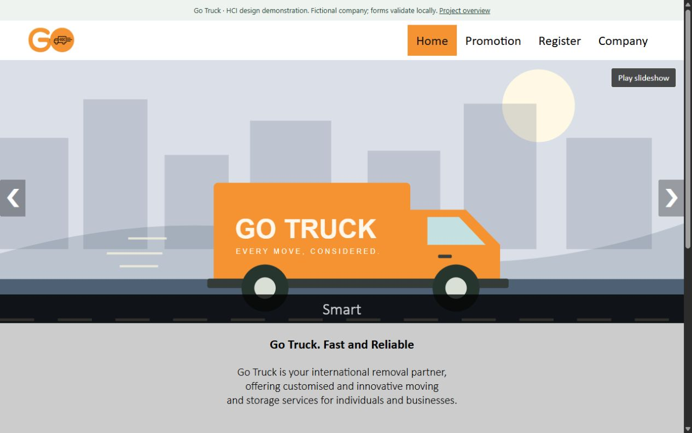
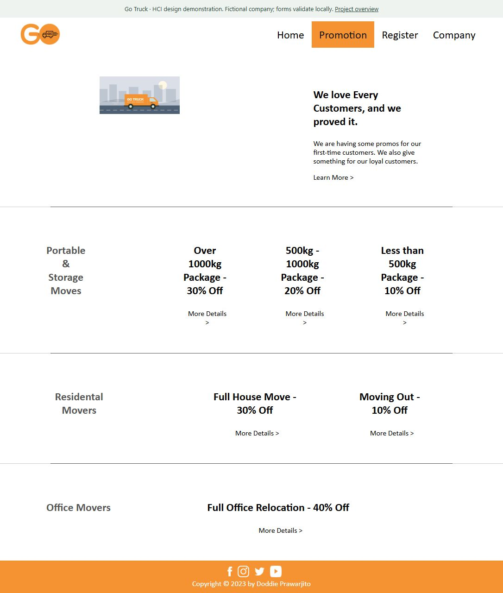
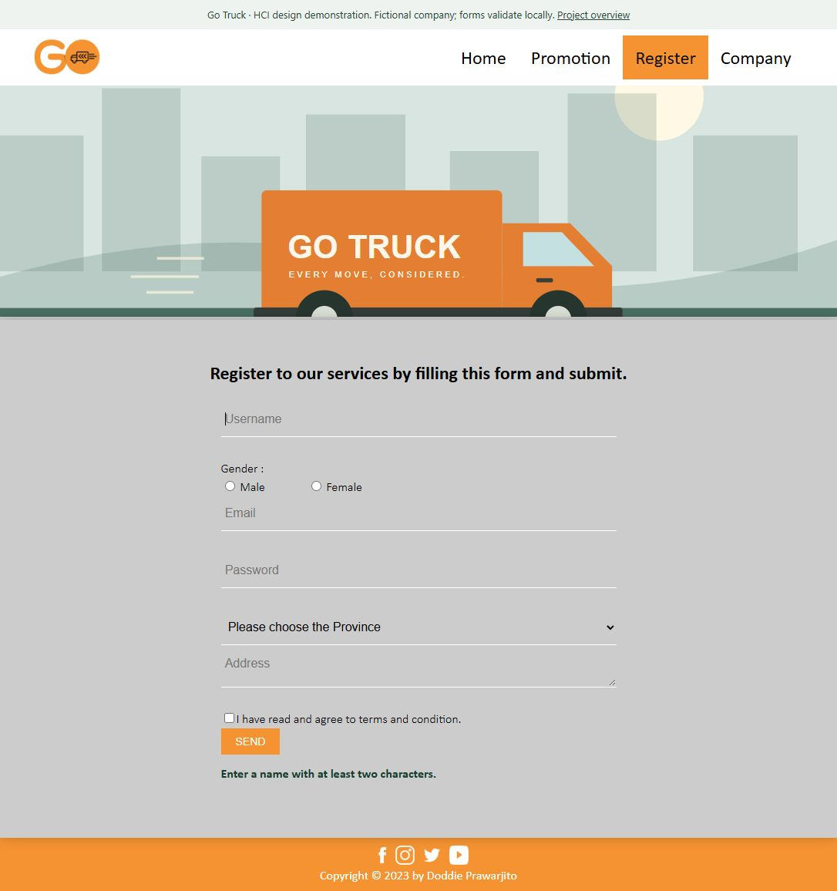
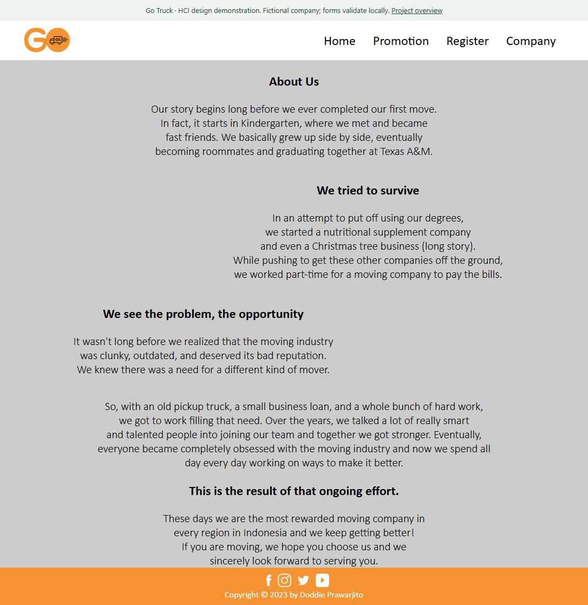

Go Truck.
A five-page logistics-company design with an interactive registration demonstration.
The idea
A logistics website presenting moving services, promotions and registration in a consistent five-page design. Custom transport illustrations give the interface a clear visual theme.
What I built
Repaired a validator that referenced a missing message field instead of the address; added password checks and useful email-domain validation; prevented submission to a nonexistent server; restored navigation, slideshow controls and responsive layouts; replaced mismatched car imagery with logistics SVG illustrations.
All five original pages and linked assets pass static checks. Desktop/mobile navigation, form errors and valid demo registration were verified in the browser. No account is created, no password is stored and no logistics operation is represented.
Explore the features



